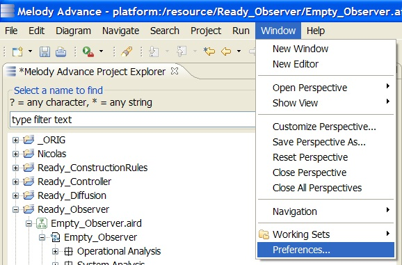

The fold/unfold button
An instance is unfolded when the pattern elements have been added/merged in the model. It is folded in the opposite case. A freshly created instance will be folded or unfolded according to the state of the 'Unfold instance when done' checkbox in the Pattern Application wizard
(see section 'Wizard page 2: Role mapping').
Unfolding an instance consists in adding and merging elements according to how the pattern was applied
(see section 'Wizard page 2: Role mapping'). This operation happens when the 'Unfold' button is clicked on a folded instance. In that case, the 'Show unfolded elements' determines whether the elements added should be showed in the current diagram. Since a diagram can only show certain types of elements, the instance may only be partially shown.
Once the instance has been unfolded, it can be folded back by clicking the same button which will now display 'Fold'.

Note (Capella only): With the default Capella preferences, a confirmation window pops up for deleting the unfolded elements. If 'No' is clicked then the folding operation is cancelled. The presence of the confirmation dialog can be enabled or disabled via the Capella preferences. In the 'Window' menu, click 'Preferences…'.

Then select the 'Delete' subsection of the 'Capella' section, and check/uncheck the 'Confirm deletions' checkbox.